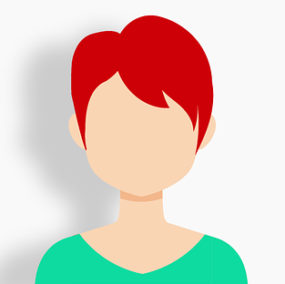

Empathy
User Interviews
Objectives:
Find out why people felt incentivized to support the nonprofits they donated to.
Learn what information is the most users like to learn first when discovering a new nonprofit.
Insights
“ When a NPO makes me feel apart of the community I feel more of a part of the solution and am more likely to donate”

“I feel happy to help them. Feels like I am giving back to community. God has gifted me a great life and I feel I have to share my part”
“I am more likely to donate after learning about the organizations mission and how they use donated money”
1st Persona
2d Persona